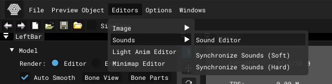

Setup *.ogg
About
*.ogg is a special sound format. It needs setup for proper playback in the game world and AI response.
Setup via SDK
To convert *.wav to *.ogg with SDK setup, you need to drop the file into the rawdata\sounds folder
Open Actor Editor -> Editors -> Sounds -> Sound Editor.

In the window that opens you will see your file, click on it and setup.

Setup via SAVANT
Sound Attribute Viewer And Tweaker - This is a fan program for editing *.ogg.
Download and open SAVANT and select the directory with your sound.

Now you can setup your file.